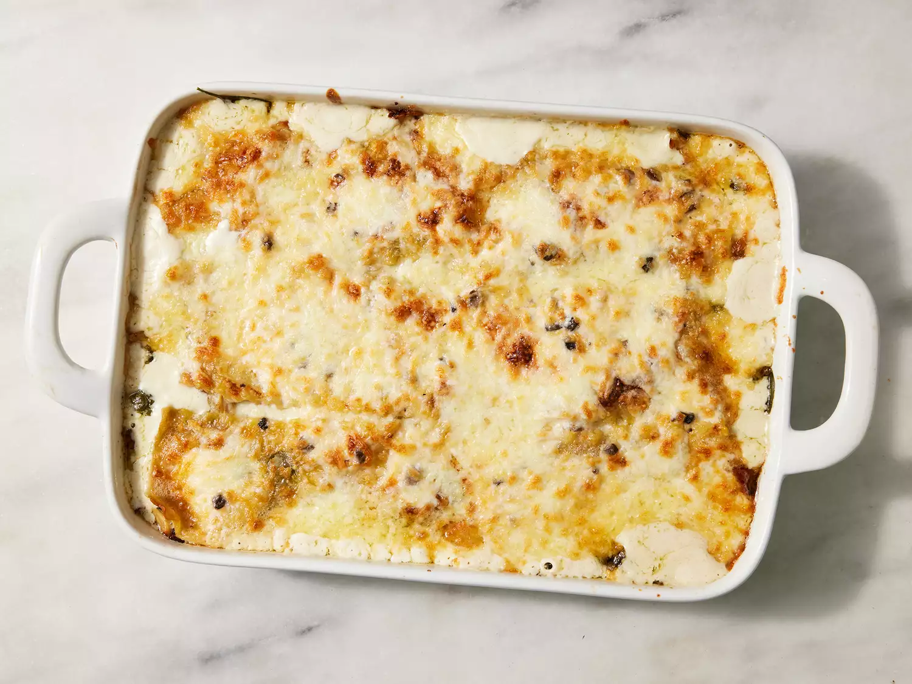

Lasagna

Description
This easy white chicken lasagna with spinach is a different, yet delicious twist on a classic lasagna!
Ingredients
- 1 (8 ounce) package lasagna noodles
- 3 cups heavy cream
- 2 (10.5 ounce) cans condensed cream of mushroom soup
- 1 cup grated Parmesan cheese
- ¼ cup butter
- 1 tablespoon olive oil
- ½ large onion, diced
- 4 cloves garlic, sliced
- 5 mushrooms, diced
- 1 cooked rotisserie chicken, shredded
- salt and ground black pepper to taste
- 1 cup ricotta cheese
- 1 bunch fresh spinach, rinsed
- 3 cups shredded mozzarella cheese
Steps
- Gather the ingredients.
- Preheat the oven to 350 degrees F (175 degrees C). Bring a large pot of lightly salted water to a boil. Add lasagna noodles and cook until al dente, about 8 to 10 minutes. Drain, and rinse with cold water.
- Mix heavy cream, cream of mushroom soup, Parmesan cheese, and butter in a saucepan over low heat; simmer, stirring frequently, until well blended.
- Heat olive oil in a skillet over medium heat. Cook and stir onion in olive oil until tender, then add garlic and mushrooms.
- Mix in chicken, and cook until heated through. Season with salt and pepper.
- Lightly coat the bottom of a 9x13-inch baking dish with enough of the cream sauce mixture to coat.
- Layer with 1/3 of the lasagna noodles, 1/2 cup ricotta, 1/2 of the spinach.
- Add 1/2 the chicken mixture, and 1 cup mozzarella. Top with 1/3 the cream sauce mixture, and repeat the layers.
- Place the remaining noodles on top, and spread with remaining sauce.
- Bake 1 hour in the preheated oven, or until brown and bubbly. Top with the remaining mozzarella, and continue baking until cheese is melted and lightly browned.